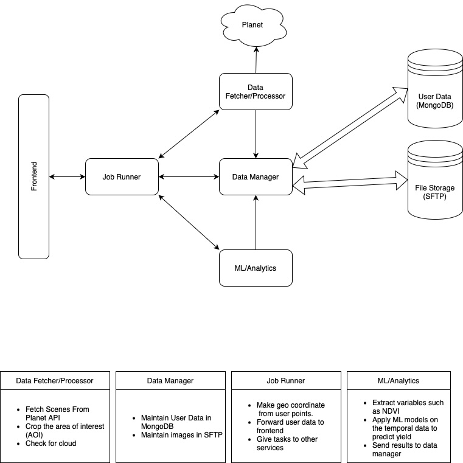

1. Introduction
Farmers face significant challenges in accurately predicting crop yields and managing resources due to limited access to real-time, actionable insights. Traditional methods, such as relying on historical data or basic field observations, fail to account for dynamic factors like weather variability, soil health changes, and the spread of crop diseases.
Advanced data-driven systems are essential for addressing these issues. While UAV data provides high-resolution, localized insights, it is constrained by high costs, limited coverage, and operational complexity. In contrast, satellite data is scalable, cost-effective, and offers consistent, large-scale monitoring over time, making it more suitable for widespread agricultural applications.
This web-based tool automates data sourcing, incorporates Area of Interest (AOI)-specific cloud filtering, and analyzes crop health using vegetation indices and time-series data. By providing predictive models for crop yield, we can empower farmers with real-time monitoring and accurate forecasts.
2. System Demonstration
3. System Design

The Satellite-based Crop Monitoring System (SCMS) employs a micro-service architecture, with each micro-service designed to perform a specific task. This modularity ensures:
- Security: Internal APIs are not publicly exposed, reducing the risk of external threats.
- Flexibility: Docker containerization allows deployment across various cloud platforms like AWS, Azure, or GCP.
- Scalability: The architecture supports easy integration of future capabilities by adding new containers.
Key components of the system include:
- Frontend: Built using React.js, providing user registration, AOI marking, and analytics display.
- Job Runner: Orchestrates backend operations and coordinates API requests.
- Data Fetcher/Processor: Handles satellite image retrieval and preprocessing.
- Data Manager: Manages data storage using MongoDB and SFTP.
- ML/Analytics: Applies machine learning techniques for crop yield prediction.
4. Future Research
My ongoing research explores advanced ML applications on satellite data for comprehensive crop monitoring. Current focus areas include:
- Yield Estimation: Enhancing predictive models at both local farm and district levels.
- Crop Identification: Developing techniques to accurately identify different crop types using satellite imagery.
- Disease Identification: Creating models to detect and predict crop diseases early in the growth cycle.
I am exploring a range of machine learning techniques, including:
- Multimodal transformers
- Recurrent Neural Networks (RNN)
- Convolutional Neural Networks (CNN)